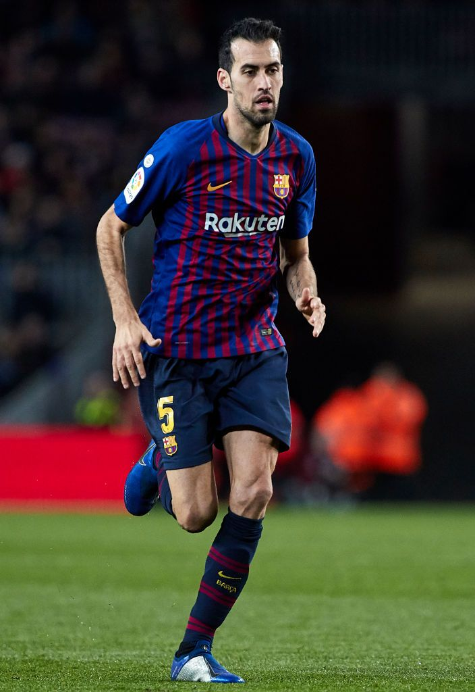

Sergio Busquets
Powrót na stronę głowną
Sergio Busquets urodził się 16 lipca 1988 roku w Sabadell, Hiszpania. Jest Hiszpanem i legendarnym defensywnym pomocnikiem FC Barcelony (2008–2023). W 2023 roku przeszedł do Inter Miami CF, grając u boku Lionela Messiego.
